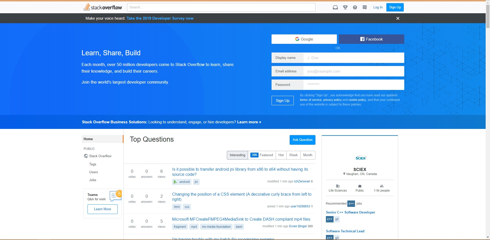
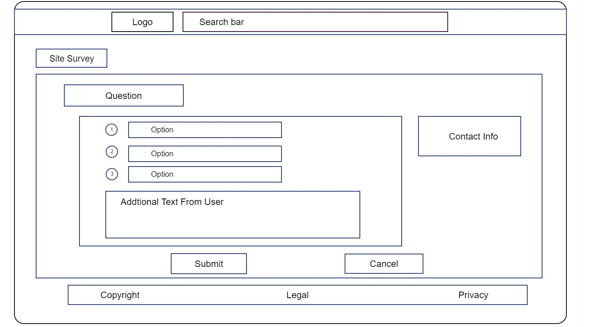

Section A - XML Format & Design & System Administration
1. Convert the following loose HTML5 format into XML format.
Mention the required changes as comments.
Then write the code in the answer
<html>
<body> ⁄⁄change Body to small letter "body"
<p>
<italic> Welcome to my web site </italic>
</p> ⁄⁄remove the unmatched <p> tag
<p>
the site more often PLEASE!
</p> ⁄⁄add a pair of extra <p> tags
</body>
</html>
2. Do the minimum changes to rename the following files so they are compatible with windows 7 and higher versions of windows operating system,
mention the reasons why they are not compatible with these operating systems
a. 0360-270/advancedWebsiteDesign.txt -> 0360-270advancedWebsiteDesign.txt because "/" cannot be included when create the file name
b. ?Webdesign.html -> Webdesign.html because "?" is an illegal character when create a file name
c. <Hello>.html -> Hello.html becasue "<" and ">" are not allowed in file name
Those characters have a functional meaning that affects the operating system's handling of the files and even recognizing that there is even a file if it had to encounter such a filename.
3. Fill in the blank:
a. Selector the part of a style rule that determines which html element to match.
b. The :hover pseudo-class lets you apply a style that appears when hover over an element with a pointer.
c. JavaScript is a client-side scripting language used with HTML forms.
4. Browse the web, and find a site that does not contain a user survey form. Write a user survey with
10 questions that you would use on the site. Tailor the questions to the site’s content and goals. Restrict the user options with radio buttons, dropdown lists, check boxes, etc. design a wireframe that includes the survey, using a tool like pencil or paint. the wireframe should mimic the look and feel of the selected website

